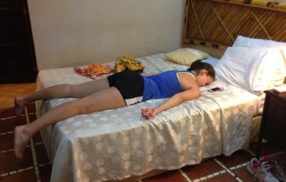

Module: Fatigue and Energy Conservation
Janet L. Poole, PhD, OTR/L, Cindy Mendelson, PhD, RN, Laura Dyas, LSW, LPC, MA, Mary Alore, MBA
Resources
Symptoms of fatigue
A list of some of the signs and symptoms that scleroderma patients have experienced with their fatigue.
Printout PDFFatigue
Fatigue is a physical or mental state of being tired, weak, and having no energy. People can feel both physically and mentally fatigued at the same time. This can happen if you are physically exhausted for extended periods of time. When you are physically fatigued, your body can no longer function at your normal level of activity. This can be discouraging if you are used to living an active life and are now more sedentary. Mental fatigue can set in due to a change in sleep patterns, stress, or depression. When you are mentally fatigued, it can be hard to concentrate.
Some days you may wake up full of energy, while other days you may find yourself struggling to even get out of bed. On high energy days, you face your to-do list with enthusiasm and a renewed sense of hope. You start at the top of it and work your way through each item on the list. By the end of the day you are on the couch, exhausted, and frustrated, knowing that tomorrow you could be in bed with a multitude of symptoms. However, there are ways to find a balance, to help you manage your fatigue and enjoy life and all it has to offer.
This module will help you identify the causes and symptoms of fatigue, and assist you in managing your fatigue by saving energy.
Energy can be thought of as money in the bank. Your money is spent or withdrawn by your disease and symptoms and doing things and your balance gets “low.” You can deposit energy back into your account or borrow or transfer energy by exercise, pacing and managing time, using energy-saving devices, getting rest and sleep, and setting up a support system. This module will give you ideas on depositing and budgeting energy.
Causes of fatigue in people with scleroderma (or things that can lower your energy level)
Why do people with scleroderma get tired easily?
Fatigue is a complex problem often experienced by people with chronic illness. Fatigue is usually caused by an interaction between physical and emotional causes.
- Pain – Chronic pain, acute pain, and worry about pain can all contribute to the experience of fatigue. This fatigue can be caused both by chemical changes in the body and by the stress and anxiety that often accompanies pain. See module on “Pain Management.”
- Sleep Problems – Not enough sleep, disrupted sleep, or sleep that is not of high quality all contribute directly to daytime fatigue.
- Overdoing – Adjustment to a new illness often means having to adjust what your ideas are about a reasonable amount of activity. Overdoing things will definitely lead to increased fatigue.
- Limited capacity to process oxygen – Scleroderma can affect the lungs in several ways, which can result in shortness of breath and difficulty breathing.
- Muscle abnormalities – Recent research suggests that changes in the muscles of people with scleroderma may be one of the many factors that contribute to fatigue in people with scleroderma. See module on “In-depth information on muscle and lung involvement with a focus on African Americans.”
- Depression – Mild situational depression is a normal response to the limitations of chronic illness. Often, people experiencing depression have a loss of energy and enthusiasm. If you believe you are depressed, you should tell your doctor or other health professional. See module on “Coping and body image/appearance.”
See resource on “Symptoms of fatigue“